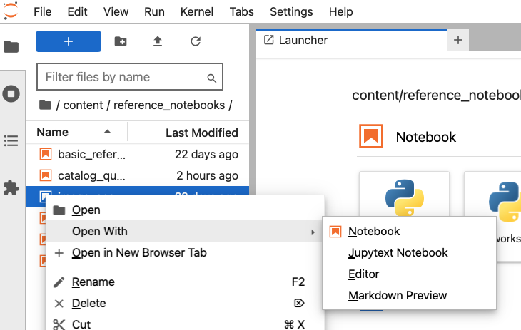
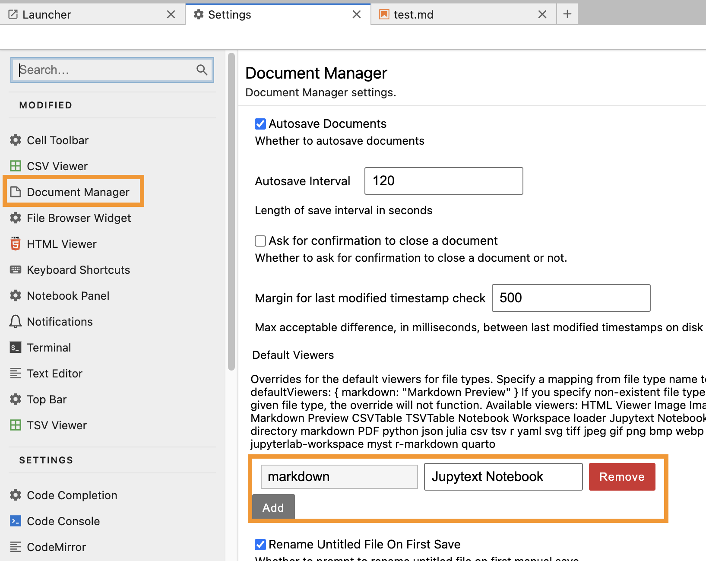

Configuring the Workshop Environment#
These directions walk through installing miniconda, a lightweight distribution of the python package installer conda, downloading the NAVO workshop material, then creating and testing the custom environment for the workshop.
0. (Only for Windows) Install WSL#
This step is is only for Windows users and is adapted from step 0 of the Astropy Workshop instructions.
If you are using Windows, we now recommend using the Windows Subsystem for Linux (WSL) instead of using native Windows tools. WSL is now fully supported by Microsoft and tends to result in fewer install headaches, and lets you use tools that were developed for Linux seamlessly in Windows. Since installing WSL requires admin privileges, this approach is suitable if you already have WSL installed or have admin privileges. If neither of those is true, you may still have success using the Windows-native installation of Miniconda in step 1, but can also run and save all the workshop content via a web browser using the Running on Sciserver instructions.
If you are not using Windows, proceed to step 1.
If WSL is already installed with Ubuntu, proceed to step 1 and follow the instructions using WSL as if you were fully on Ubuntu Linux.
To install WSL, you should follow the instructions Microsoft provides here: https://docs.microsoft.com/en-us/windows/wsl/install. While you may choose an alternative Linux distribution from the default Ubuntu, the instructions below have been tested on Ubuntu, so unless you have a specific reason, we suggest you stick with the default. Once you reach the point in the instructions with a working Linux terminal prompt, you can proceed to step 1 of these instructions.
1. Install Miniconda (if needed)#
Miniconda is a free minimal installer for conda. It is a small, bootstrap version of Anaconda that includes only conda, Python, the packages they depend on, and a small number of other useful packages, including pip, zlib and a few others. Note, though, that if you have either Miniconda or the full Anaconda already installed, you can skip to the next step.
Check if Miniconda is already installed:
conda info
If Miniconda is not already installed, follow these instructions for your operating system: https://docs.conda.io/en/latest/miniconda.html
On Windows, you might also need additional compilers.
2. Update conda version#
Miniconda includes an environment manager called conda. Environments allow you to have multiple sets of Python packages installed at the same time, making reproducibility and upgrades easier. You can create, export, list, remove, and update environments that have different versions of Python and/or packages installed in them. For this workshop, we will configure the environment using the conda command prompt.
Open a terminal window and verify that conda is working:
% conda info
If you are having trouble, check your shell in a terminal window:
% echo $SHELL
then run the initialization if needed, in that same terminal window:
% conda init `basename $SHELL`
You should open a new terminal window after conda init is run.
It is advisable to update your conda to the latest version. We recommend a minimum version of 23.10.0. Check your conda version with:
% conda --version
Update it with:
% conda update conda
or
% conda update -n base conda
3. Install git (if needed)#
At the prompt opened in the previous step, enter this command to see whether git is already installed and accessible to this shell:
git --version
If the output shows a git version, proceed to the next step. Otherwise install git by entering the following command and following the prompts:
conda install git
4. Clone This Repository#
Download the workshop folder using git:
git clone https://github.com/NASA-NAVO/navo-workshop
5. Create a conda environment for the workshop#
For this workshop, the python version and all needed packages are listed in the environment.yml file.
Navigate to the workshop directory in the terminal. For example, if you installed the navo-workshop directory in your home directory, you could type the following:
cd navo-workshop
To install and activate the conda environment for the workshop, type:
conda env create --file environment.yml
conda activate navo-env
The creation of the environment can take some time to run.
6. Check Installation#
The name of the new conda environment created above should be displayed next to the terminal prompt:
(navo-env)
Run the check_env.py script to check the Python environment and some of the
required dependencies:
python check_env.py
7. Starting Jupyterlab#
From the top-level directory of the repository, change directory to the
content/ subdirectory:
cd content
Start Jupyterlab from this subdirectory:
jupyter lab
You can then use the Jupyterlab file browser to navigate to the
reference_notebooks and use_case_notebooks subdirectories that contain
the notebooks.
8. Handling Notebooks in MyST-Markdown format#
The Jupyter notebooks in this repository are in
MyST-Markdown format.
The jupytext package is
included in your navo-env environment to work with these notebooks. Note that
the jupytext package has to be installed before your Jupyterlab session starts.
To open one of these notebooks (in the content/reference_notebooks and the
content/use_case_notebooks subdirectories), in the Jupyterlab file panel,
right-click on the notebook, choose “Open With”, and select “Notebook” or
“Jupytext Notebook” from the drop-down menu. See the screenshot below.

It is possible to change your Jupyterlab settings to allow double-clicking on a
Markdown notebook to open automatically as a Jupytext Notebook. In Jupyterlab,
navigate from the top-level menu item “Settings” and select “Settings Editor”
in the drop-down. In the left sidebar of the Setting Editor tab, select
“Document Manager”. The display should look like the image included below. In
the “Default Viewers” section, add a newKey of markdown and a New Value
of Jupytext Notebook. This will allow a double-click to open the Markdown
notebooks appropriately.
